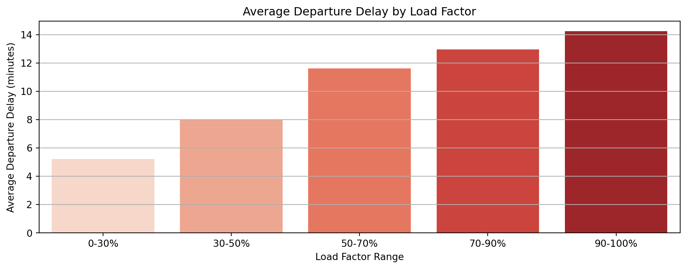
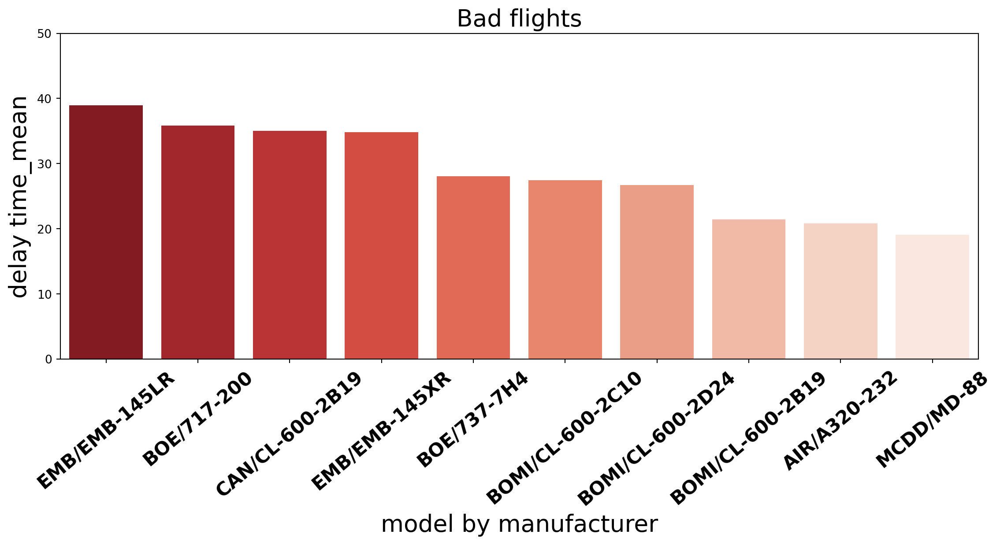
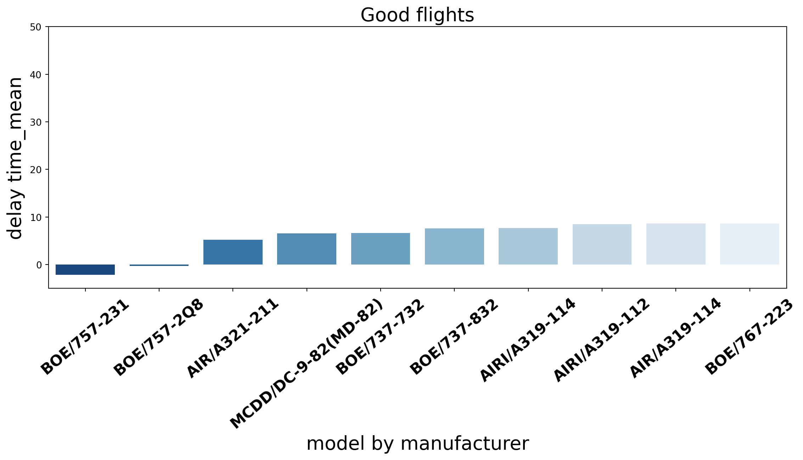
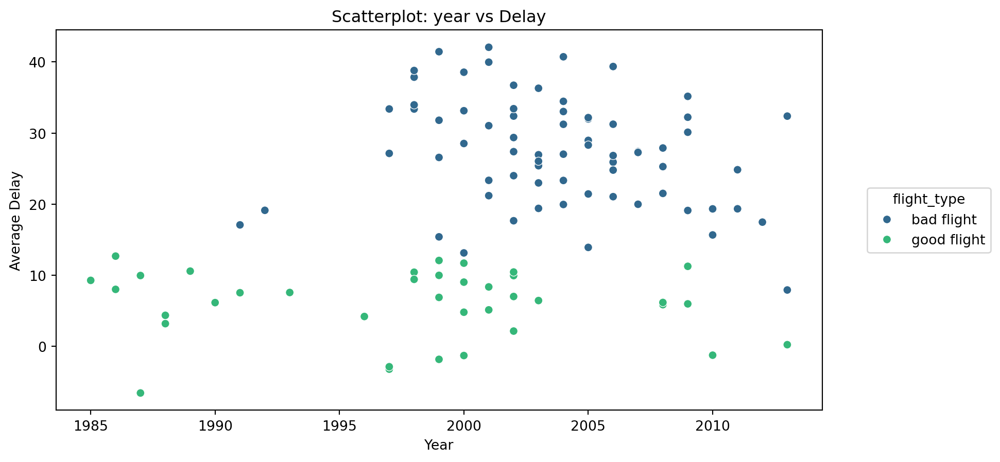
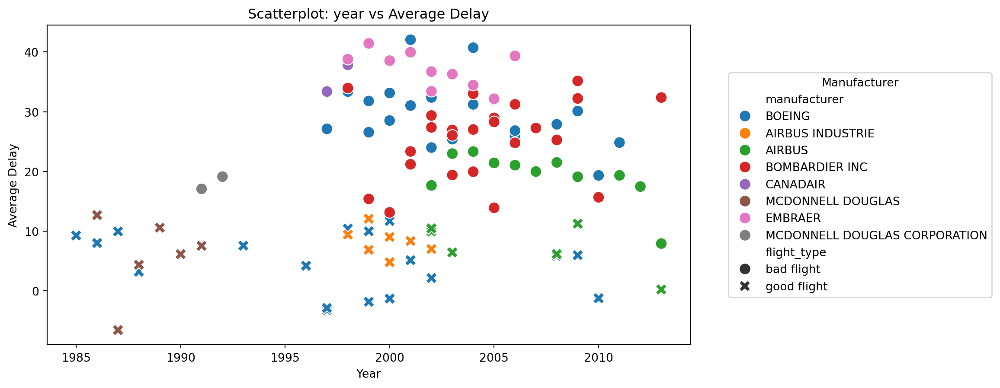
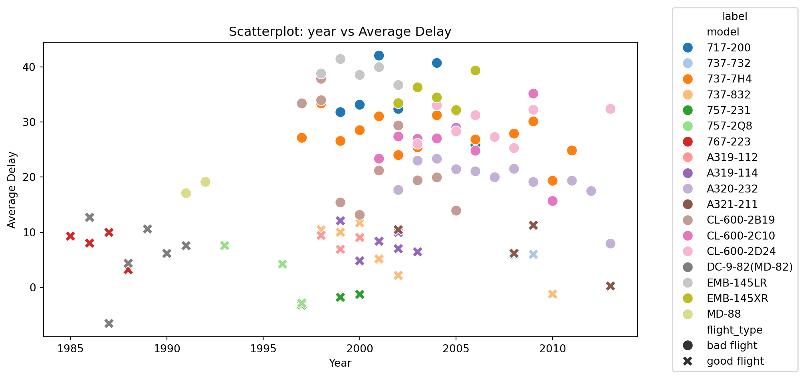

.
1. 분석 개요
- 항공편 지연은 항공사, 공항 운영, 승객에게 큰 영향을 미치는 중요한 요소
- 지연을 유발하는 다양한 요인(탑승률, 항공기 모델, 노선 등)에 대한 분석 필요
2. 사용 데이터
| 데이터셋 | 데이터 출처 | 설명 |
|---|---|---|
flights.csv |
내부 데이터 | 항공편 정보 (출발지, 도착지, 지연 시간 등) |
planes.csv |
내부 데이터 | 항공기 정보 (제조 연도, 모델 등) |
airlines.csv |
내부 데이터 | 항공사 코드 및 항공사명 정보 |
t100.csv |
외부 데이터 | 미국 국내선 항공사의 운항 실적 (항공편 수, 좌석 수, 승객 수, 운항 거리 등) 제공 |
3. 공통 데이터 전처리
flights.csv와planes.csv를tailnum기준으로 병합datetime컬럼 생성 (year,month,day,hour,minute를 변환)airlines.csv를carrier기준으로 병합하여 항공사명 추가
<class 'pandas.core.frame.DataFrame'>
RangeIndex: 284170 entries, 0 to 284169
Data columns (total 29 columns):
# Column Non-Null Count Dtype
--- ------ -------------- -----
0 year 284170 non-null int64
1 month 284170 non-null int64
2 day 284170 non-null int64
3 dep_time 279971 non-null float64
4 sched_dep_time 284170 non-null int64
5 dep_delay 279971 non-null float64
6 arr_time 279619 non-null float64
7 sched_arr_time 284170 non-null int64
8 arr_delay 279017 non-null float64
9 carrier 284170 non-null object
10 flight 284170 non-null int64
11 tailnum 284170 non-null object
12 origin 284170 non-null object
13 dest 284170 non-null object
14 air_time 279017 non-null float64
15 distance 284170 non-null int64
16 hour 284170 non-null int64
17 minute 284170 non-null int64
18 time_hour 284170 non-null object
19 manuf_year 278864 non-null float64
20 type 284170 non-null object
21 manufacturer 284170 non-null object
22 model 284170 non-null object
23 engines 284170 non-null int64
24 seats 284170 non-null int64
25 speed 963 non-null float64
26 engine 284170 non-null object
27 datetime 284170 non-null datetime64[ns]
28 name 284170 non-null object
dtypes: datetime64[ns](1), float64(7), int64(11), object(10)
memory usage: 62.9+ MB
None4. 분석
4.1 탑승률과 항공편 지연 관계 분석
4.2 제조사별 엔진 지연 시간 분석
4.3 제조사별 엔진 지연 시간 원인 도출
4.1 탑승률과 항공편 지연 관계 분석
- 항공편 지연은 승객과 항공사 운영에 큰 영향을 미침
- 지연이 발생하는 원인은 여러 가지지만, 탑승률(Load Factor)과의 관계를 분석
- 탑승률이 높아질수록 실제로 항공편이 더 지연되는지 확인
4.1 탑승률과 항공편 지연 관계
추가 데이터 전처리
탑승률을 계산하기 위해 필요한 전처리 과정
1️⃣ t100.csv(외부 데이터)에서 기존 flights.csv에 있는 출발지(origin), 목적지(dest), 항공사(carrier)만 필터링
2️⃣ 탑승률 계산을 위해 연, 월, 항공사, 출발지, 도착지 기준으로 seats(좌석 수)와 passengers(승객 수)를 합산
3️⃣ 기존 항공편 데이터(flights.csv)와 그룹화 기준을 맞춰 flight_count, avg_dep_delay, avg_arr_delay 계산
4️⃣ 두 데이터를 병합하여 load_factor = passengers / seats 계산
5️⃣ 이상치 제거(IQR 방식)
4.1 탑승률과 항공편 지연 관계
분석 및 시각화
Code
cleaned_df["load_factor_bin"] = pd.cut(cleaned_df["load_factor"], bins=[0, 0.3, 0.5, 0.7, 0.9, 1], labels=["0-30%", "30-50%", "50-70%", "70-90%", "90-100%"])
summary_stats = cleaned_df.groupby("load_factor_bin")[["avg_dep_delay", "avg_arr_delay"]].mean().reset_index()
plt.figure(figsize=(12, 4))
sns.barplot(data=summary_stats, x="load_factor_bin", y="avg_dep_delay", palette="Reds")
plt.xlabel("Load Factor Range")
plt.ylabel("Average Departure Delay (minutes)")
plt.title("Average Departure Delay by Load Factor")
plt.grid(axis="y")
plt.show()
- 탑승률이 0~30% 구간에서는 평균 출발 지연 시간이 5.6분으로 가장 낮음
- 탑승률이 30~50% 구간에서는 평균 출발 지연 시간이 8분으로 증가
- 탑승률이 50~70% 구간에서는 평균 출발 지연 시간이 11.6분으로 상승
- 탑승률이 70~90% 구간에서는 평균 출발 지연 시간이 12.7분으로 증가
- 탑승률이 90~100% 구간에서는 평균 출발 지연 시간이 14.2분으로 가장 길어짐
4.1 탑승률과 항공편 지연 관계
결과
✅ 탑승률에 따라서 출발 지연 시간이 꾸준히 증가하는 패턴 확인
✅ 만석에 가까울수록 지연 시간이 긴 이유는 보딩 및 공항 운영상의 복합적인 요소 때문일 가능성이 큼
✅ 탑승률과 출발 지연 사이에 상관관계가 존재하며, 추가적인 공항 운영 요인 분석이 필요함
4.2 제조사별 엔진 Delay 시간 분석
- 최근 화두가 되는 비행기 엔진문제
- 그 중 ’보잉’사의 엔진 문제가 많은 이야깃거리
- 항공기 제조사중 가장 지연이 가장 많은 제조사와 그 기종은?
제조사들의 결함 문제


4.1 탑승률과 항공편 지연 관계
추가 데이터 전처리
- 도착 지연시간과 출발 지연시간을 더하여 새로운 column 생성
- 제조사별 모델을 그룹화하여 delay 평균과 비행 횟수를 구함
df_air_time = (
df.groupby(['manufacturer', 'model'])["delay_time"]
.agg(['mean', 'count']).sort_values('mean', ascending=False)
).reset_index()
df_air_time.head()| manufacturer | model | mean | count | |
|---|---|---|---|---|
| 0 | AIRBUS INDUSTRIE | A330-223 | 452.00 | 1 |
| 1 | BOEING | 747-451 | 252.00 | 1 |
| 2 | BOEING | 757-351 | 155.25 | 4 |
| 3 | BOEING | 777-224 | 91.00 | 4 |
| 4 | GULFSTREAM AEROSPACE | G-IV | 87.50 | 12 |
- 운항 횟수가 1000회 미만인 데이터를 제거하여 신뢰성 있는 데이터만 유지 (147개 -> 38개)
- 출발 지연시간이 가장 긴 상위 10개 및 가장 짧은 하위 10개 기종 추출
- .nlargest(), nsmallest() 를 사용해서 상,하위 10개의 ’mean’열 데이터 추출
상위 10개 추출
model mean count
18 EMB-145LR 38.964306 26475
22 717-200 35.852358 3075
23 CL-600-2B19 34.992627 1492
24 EMB-145XR 34.796349 13312
37 737-7H4 28.022783 10227
38 CL-600-2C10 27.439327 7903
40 CL-600-2D24 26.665237 11656
52 CL-600-2B19 21.422945 7871
54 A320-232 20.840146 30972
59 MD-88 19.028067 1247하위 10개 추출
model mean count
128 757-231 -2.109045 2366
122 757-2Q8 -0.293210 2268
108 A321-211 5.255715 1181
104 DC-9-82(MD-82) 6.566601 2545
103 737-732 6.639552 1340
102 737-832 7.598017 8672
101 A319-114 7.683273 4938
99 A319-112 8.519237 5822
98 A319-114 8.647260 4672
97 767-223 8.659091 4224- 그래프에서 제조사와 모델을 직관적으로 표시하기 위해 새로운 열 manu_model 생성
- 제조사 이름의 앞 3글자 + 두 번째 단어의 첫 글자 + 모델명을 조합하여 가독성을 높임
Code
delay_time_top['manu_model'] = ( delay_time_top['manufacturer'].str[:3] + delay_time_top['manufacturer'].str.split().str[1].str[0].fillna(''))+ "/" + delay_time_top['model']
delay_time_bottom['manu_model'] = ( delay_time_bottom['manufacturer'].str[:3] + delay_time_bottom['manufacturer'].str.split().str[1].str[0].fillna(''))+ "/" + delay_time_bottom['model'] manufacturer model manu_model
18 EMBRAER EMB-145LR EMB/EMB-145LR
22 BOEING 717-200 BOE/717-200
23 CANADAIR CL-600-2B19 CAN/CL-600-2B19
24 EMBRAER EMB-145XR EMB/EMB-145XR
37 BOEING 737-7H4 BOE/737-7H4
38 BOMBARDIER INC CL-600-2C10 BOMI/CL-600-2C10
40 BOMBARDIER INC CL-600-2D24 BOMI/CL-600-2D24
52 BOMBARDIER INC CL-600-2B19 BOMI/CL-600-2B19
54 AIRBUS A320-232 AIR/A320-232
59 MCDONNELL DOUGLAS CORPORATION MD-88 MCDD/MD-88분석 및 시각화
Code
plt.figure(figsize=(14,5))
sns.barplot(x=delay_time_top['manu_model'],y=delay_time_top['mean'], palette="Reds_r")
plt.ylim(0, 50)
plt.xlabel("model by manufacturer",fontsize=20)
plt.ylabel("delay time_mean",fontsize=20)
plt.title("Bad flights",fontsize=20)
plt.xticks(rotation=40,fontsize=16, fontweight='bold');
분석 및 시각화
Code
plt.figure(figsize=(14,5))
sns.barplot(x=delay_time_bottom['manu_model'],y=delay_time_bottom['mean'], palette="Blues_r")
plt.ylim(-5, 50)
plt.xlabel("model by manufacturer",fontsize=20)
plt.ylabel("delay time_mean",fontsize=20)
plt.title("Good flights",fontsize=20)
plt.xticks(rotation=40,fontsize=16, fontweight='bold');
결론
- 가장 신뢰성이 떨어지는 기종 Top3는 ‘EMB’사의’EMB-145LR’기종, ‘BOE’사의’717-200’기종 , ‘CAN’사의’CL-600-2B19’기종이다
- 또한 제조사만 봤을때 ‘BOMI’사 4대,’EMB’사 2대 , ’BOE’사 2대가 나타나여 이 제조사들의 model이 지연이 잘되는 걸 알 수 있다.
- EMB는 엠브라에르, BOE는 보잉, CAN은 케나다에어
- 반대로 신뢰성이 높은 기종 Top3는 ‘BOE’사의’757-231’기종, ‘BOE’사의’757-2Q8’ 기종, ‘AIR’사의’A321-211’기종 이다.
- 또한 제조사만 봤을때 ‘BOE’사 5대,’AIRBUS’사 2대, ’AIR Industry’사 2대로 신뢰성 높은 model을 만들어 내는것을 알 수 있다.
피해야 할 비행기
ERJ 145

BOE 717

CL-600-2B19

4.3 제조사별 엔진 지연 시간 원인 도출
- 앞선 결과에서 더 자세한 원인을 분석하고자함
- 예상 원인: 제조 연식,비행기 모델,엔진 수,항공사,공항,시트 수
추가 전처리
Code
<class 'pandas.core.frame.DataFrame'>
RangeIndex: 156426 entries, 0 to 156425
Data columns (total 34 columns):
# Column Non-Null Count Dtype
--- ------ -------------- -----
0 manufacturer 156426 non-null object
1 model 156426 non-null object
2 mean 156426 non-null float64
3 count 156426 non-null int64
4 manu_model 156426 non-null object
5 flight_type 156426 non-null object
6 year 156426 non-null int64
7 month 156426 non-null int64
8 day 156426 non-null int64
9 dep_time 152861 non-null float64
10 sched_dep_time 156426 non-null int64
11 dep_delay 152861 non-null float64
12 arr_time 152617 non-null float64
13 sched_arr_time 156426 non-null int64
14 arr_delay 152258 non-null float64
15 carrier 156426 non-null object
16 flight 156426 non-null int64
17 tailnum 156426 non-null object
18 origin 156426 non-null object
19 dest 156426 non-null object
20 air_time 152258 non-null float64
21 distance 156426 non-null int64
22 hour 156426 non-null int64
23 minute 156426 non-null int64
24 time_hour 156426 non-null object
25 manuf_year 153505 non-null float64
26 type 156426 non-null object
27 engines 156426 non-null int64
28 seats 156426 non-null int64
29 speed 0 non-null float64
30 engine 156426 non-null object
31 datetime 156426 non-null datetime64[ns]
32 name 156426 non-null object
33 delay_time 152258 non-null float64
dtypes: datetime64[ns](1), float64(9), int64(12), object(12)
memory usage: 40.6+ MB전처리 이후 데이터 셋
Code
| model | seats | manufacturer | manu_model | flight_type | manuf_year | delay_time | |
|---|---|---|---|---|---|---|---|
| 0 | 717-200 | 100 | BOEING | BOE/717-200 | bad flight | 1999.0 | 31.800000 |
| 1 | 717-200 | 100 | BOEING | BOE/717-200 | bad flight | 2000.0 | 33.143727 |
제조년식으로 산점도를 찍었을때
- 2000년도 기점으로 bad flight이 많아짐
무엇이 원인일까?
Code
sns.scatterplot(data=count_avg, x='manuf_year', y='delay_time', hue='flight_type', palette='viridis')
plt.legend(title='flight_type', bbox_to_anchor=(1.05, 0.5), loc='center left')
# 그래프 제목과 레이블
plt.title('Scatterplot: year vs Delay')
plt.xlabel('Year')
plt.ylabel('Average Delay')
# 그래프 출력
plt.show()
제조사로 산점도를 찍었을때
Code
sns.scatterplot(data=count_avg, x='manuf_year', y='delay_time', hue='manufacturer', style='flight_type', palette='tab10',s=100)
plt.legend(title='Manufacturer', bbox_to_anchor=(1.05, 0.5),loc='center left')
# 그래프 제목과 레이블
plt.title('Scatterplot: year vs Average Delay')
plt.xlabel('Year')
plt.ylabel('Average Delay')
plt.show()
모델별로 산점도를 찍었을때
- 18개의 모델별로 명확히 나누어진다.
- 앞서 언급한 좋은 제조사 곳은 AIRBUS INDUSTRIE 모델을 2가지 사용
- 결론: 제조사의 영향보다는 모델의 영향으로 딜레이 시간 결정됨.
앞선 결과와 일치
Code
palette = sns.color_palette("tab20", n_colors=18)
sns.scatterplot(data=count_avg, x='manuf_year', y='delay_time', hue='model',style='flight_type', palette= palette,s=100)
# 그래프 제목과 레이블
plt.legend(title='label', bbox_to_anchor=(1.05, 0.5), loc='center left')
plt.title('Scatterplot: year vs Average Delay')
plt.xlabel('Year')
plt.ylabel('Average Delay')
plt.show()
Team 6 | LS BigData School | 2025